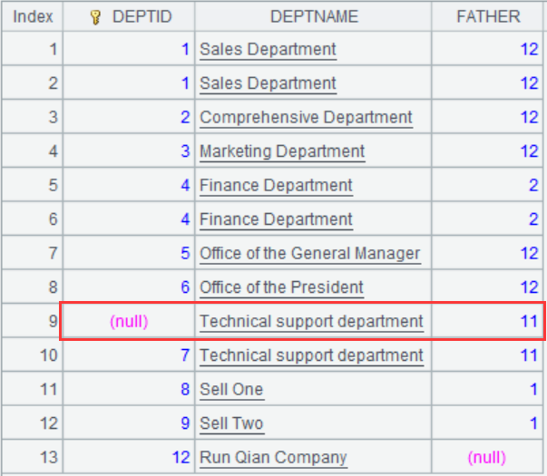
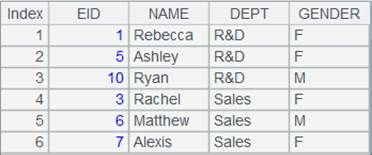

Description:
Find records in a recursive way where the foreign key values reference a specified record.
Syntax:
P.nodes(F,r,n)
Note:
r. The function finds all records from record sequence P where foreigh key F references record r, the root node, in a recursive way. The resulting records are record r¡¯s child nodes. If these child nodes don¡¯t have any child nodes, that is, their foreign key values don¡¯t reference them, they are called the root node¡¯s leaf nodes; otherwise they are called the subtrees.
If the specified record r can¡¯t be found, the function will return NULL. Parameter n is the maximum recursion depth, whose default is 1,000.
Parameter:
|
P |
A record sequence |
|
F |
Field name |
|
r |
A record |
|
n |
A number |
Option:
|
@d |
Make the function return leaf-level nodes. |
|
@p |
Make the function return all child nodes and their level relative to the root node. |
Return value:
A sequence
Example:
|
|
A |
|
|
1 |
=file("D://emp.txt").import@t().keys(empid) |

|
|
2 |
>A1.switch(mgrid,A1:empid) |
|
|
3 |
=A1.nodes(mgrid,A1.select@1(name=="Diana"),5) |
According to mgrid field, the foreign key references, search for all records of Diana¡¯s subordinates and those of the subordinates of Diana¡¯s subordinates |
|
4 |
=A1.nodes@d(mgrid,A1.select@1(name=="Diana"),5) |
 Search for the records of Diana¡¯s subordinates who are not a manager |
|
5 |
=A1.nodes@p(mgrid,A1.select@1(name=="Diana"),5) |
Display a relationship structure with Diana as the root, from which you see that Diana is the manager of empid=7, who is the manager of empid=14 |